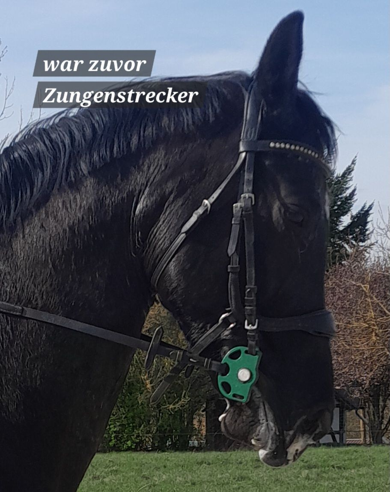
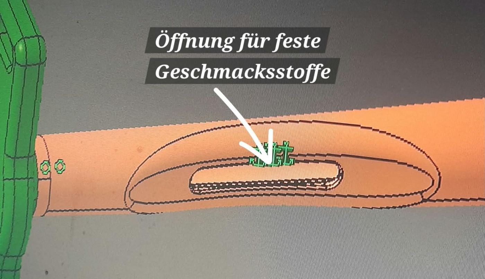
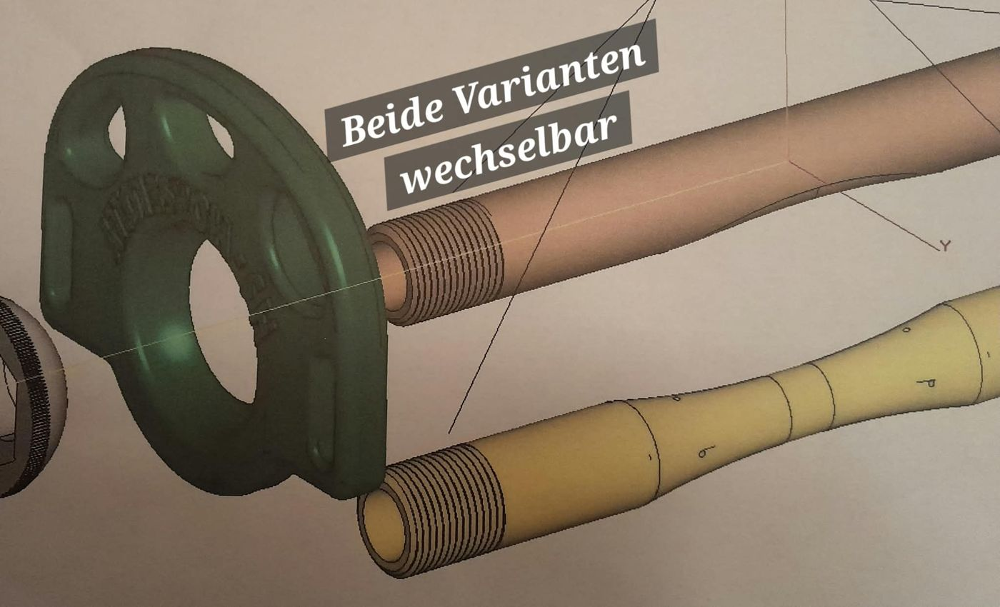
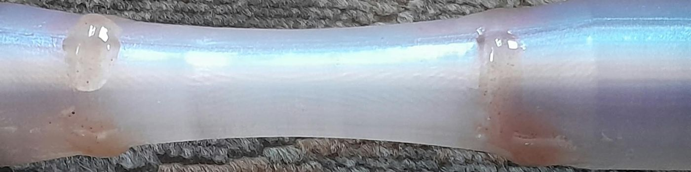
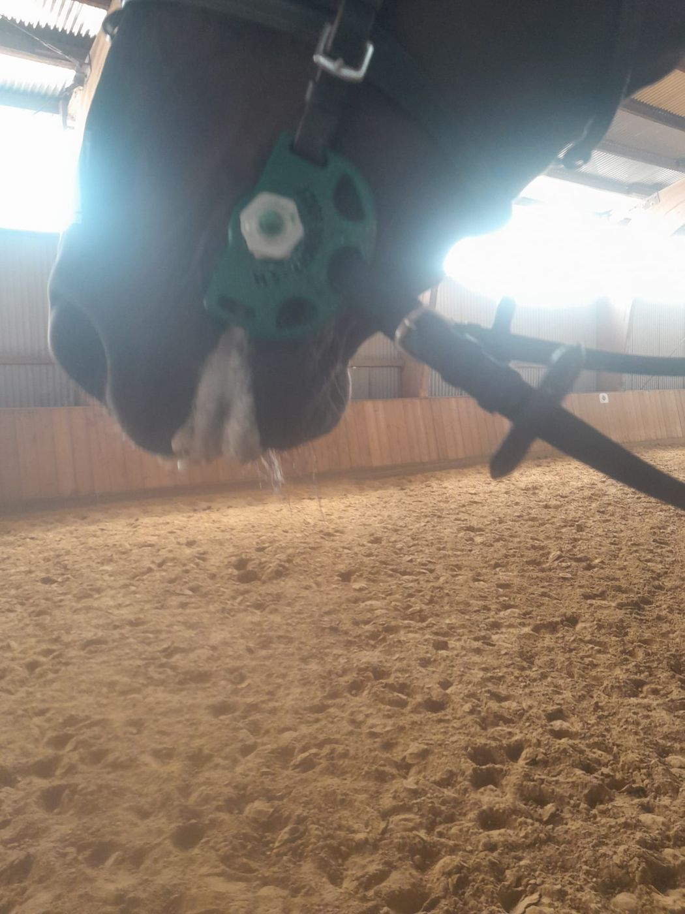

HS-Horse Lolly®
Das anpassbare Gebiss mit echten Geschmacksstoffen: eine Stange aus medizinischem Kunststoff, auf jede Maulbreite einstellbar und z. B. mit Honig, Apfelsirup oder Elektrolyten befüllbar.
Patentiert – Erfindung von Herbert Schäfer · DE 10 2025 114 357

Kauen statt Zunge zeigen
Echte Geschmacksstoffe
Die hohle Stange wird z. B. mit Honig, Apfelsirup oder Elektrolyten gefüllt. Über kleine Öffnungen gelangt der Geschmack ins Maul und regt das Kauen an.
Auf jede Maulbreite einstellbar
Die seitliche Verstellung passt das Gebiss individuell an. Zwei Mundstück-Varianten lassen sich per Gewinde wechseln.
Medizinischer Kunststoff
Weich, geschmeidig und splitterfrei – im Winter nicht zu kalt, im Sommer nicht zu warm. Flache, bewegliche Seitenteile geben seitliche Führung.
Durchdacht bis ins Detail



Aus dem Reitalltag

13 Jahre Tüftelei aus Nentershausen
Herbert Schäfer suchte ein Gebiss, das jedes Pferd gern annimmt, keine Scheuerstellen verursacht und auch für Pferde mit Zungenproblemen geeignet ist. Weil es keins gab, entwickelte der ehemalige Maschinenbaukonstrukteur es selbst – heute ist das HS-Horse Lolly in Deutschland patentiert.
„Auf das Einfachste zu kommen, ist oft das Schwierigste.“Herbert Schäfer, Erfinder
Preis & Bestellung
Preis und Bestellmöglichkeit folgen in Kürze. Sie haben schon jetzt Fragen zum HS-Horse Lolly oder möchten vormerken lassen? Wir beraten Sie gern – Herbert Schäfer kommt auf Wunsch auch zum Testen in Ihren Stall.
Gut zu wissen: Empfohlen nach der Grundausbildung des Pferdes und für Reiter mit feiner Hilfengebung. Das Gebiss ist derzeit noch nicht LPO-konform und damit nicht für den Turniereinsatz zugelassen.